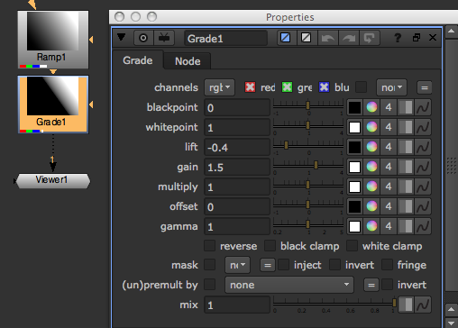
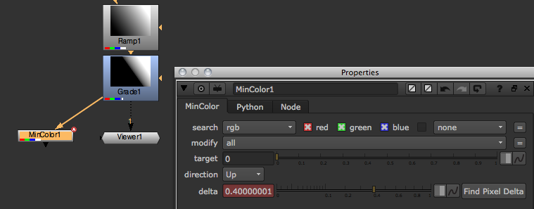
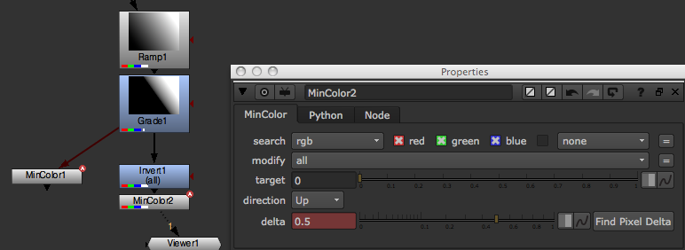
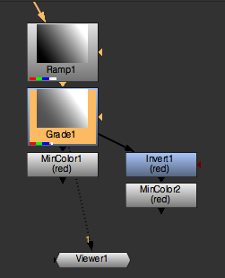

There are generally two ways of accessing pixel values through Python:
This creates a CurveTool node, executes it, deletes it, and present the value it analyzed:
noise = nuke.createNode('Noise')
noise['zoffset'].setExpression('frame*100')
ct = nuke.createNode('CurveTool')
nuke.execute(ct, nuke.frame(), nuke.frame())
dat = ct['intensitydata'].value()
nuke.delete(ct)
nuke.message('average luminance is %s' % dat)
This creates a Noise node, samples its red channel at x=500 and y=600, then prints the result:
noise = nuke.createNode('Noise')
print noise.sample('red', 500, 600)
This does the same:
print nuke.sample(noise, 'red', 500, 600)
The getMinMax tool lets you extract a channel’s minimum and maximum values. Since currently, there is no direct method in NUKE’s Python API to do this, utilize the MinColor node’s functionality to do the work. So the workflow here involves creating a few temp nodes, executing some at the current frame (to calculate the values for us), then deleting the nodes again.
To get started let’s create a test scenario: Create a Ramp node and attach a Grade node to it. Make sure the Grade node’s black clamp knob is disabled, then set the lift and gain knobs to arbitrary values.
Create a MinColor node and attach it to the Grade node. Leave the MinColor node’s *channels knob set to the default rgba and adjust some of the other knobs. When the target knob is set to 0, and you execute the node on the current frame, the delta knob carries the minimum color in the input node’s rgba layer. You should see that the value in the delta knob is very close to the value you set in the Grade node’s lift knob, but negative (there may be a rounding error as well which shouldn’t matter much).
To get the maximum value we simply invert the image first, then use a second MinColor node and the above process.
Because inverting an image means subtracting it’s pixel values from 1 (1-x), we need to add 1 to the result in the delta knob to get the correct maximum value of the original image (obviously there are many different ways to do the above, so feel free to experiment).
Now that we have established a way of getting our minimum and maximum values, let’s delete the MinColor and Invert nodes and write a script that does this for us...
Start by grabbing Grade1 from the Node Graph (DAG), then add a MinColor node with it’s target knob set to 0 using Python:
srcNode = nuke.toNode('Grade1')
nuke.nodes.MinColor(target=0)
nuke.nodes does a little less hand-holding. It simply creates a node without doing or changing anything. Since we are creating temporary nodes that we intend delete again, use this to make sure the Node Graph does not change for the user after the script has run. This does mean, however, we have to manually connect the new node - easily done at the time of creation by assigning a list of input nodes as arguments:
srcNode = nuke.toNode('Grade1')
nuke.nodes.MinColor(target=0, inputs=[srcNode])
The inputs argument expects a list of nodes because some nodes take multiple inputs. This way, you can hook them all up at once.
Now we should also assign an argument that defines the channels we want to analyze as we don’t want to limit ourselves to the default rgba. Also, we need to assign the new node to a variable so we can access it later in the code:
srcNode = nuke.toNode('Grade1')
channel = 'rgba.red'
MinColor = nuke.nodes.MinColor(channels=channel, target=0, inputs=[srcNode])
The above sets the new MinColor node to analyze only the red channel in the rgba layer.
Now create the Invert node and the second MinColor node as well, making sure to hook them up to their respective inputs, and set them to work on the channel we specified (you may want to delete the previously generated nodes before each test run):
srcNode = nuke.toNode('Grade1')
channel = 'rgba.red'
MinColor = nuke.nodes.MinColor(channels=channel, target=0, inputs=[srcNode])
Inv = nuke.nodes.Invert(channels=channel, inputs=[srcNode])
MaxColor = nuke.nodes.MinColor(channels=channel, target=0, inputs=[Inv])
This gives you something like this:
Now that we have generated the node tree, we need to execute each MinColor node to get the values we need. nuke.execute() does this for us:
curFrame = nuke.frame()
nuke.execute(MinColor, curFrame, curFrame)
As you can see, we need to provide the node to execute as well as the first and last frames as arguments. You could also use a FrameRanges object to specify the range you want to process instead, or skip it altogether to use the script ranges (see help(nuke.execute) for more info). After executing the MinColor node we now find the value for the minimum color in it’s pixeldelta knob. Remember to negate the value to get the actual minimum value:
minV = -MinColor['pixeldelta'].value()
Now do the same for the second MinColor node connected to the Invert node (the one we stored in the MaxColor variable). Remember to add 1 to the result to get the actual maximum value:
nuke.execute(MaxColor, curFrame, curFrame)
maxV = MaxColor['pixeldelta'].value() + 1
Now all we have to do is tidy up and get rid of those three temporary nodes:
for n in (MinColor, MaxColor, Inv):
nuke.delete(n)
Here is the complete code so far:
srcNode = nuke.toNode('Grade1')
channel = 'rgba.red'
MinColor = nuke.nodes.MinColor(channels=channel, target=0, inputs=[srcNode])
Inv = nuke.nodes.Invert(channels=channel, inputs=[srcNode])
MaxColor = nuke.nodes.MinColor(channels=channel, target=0, inputs=[Inv])
curFrame = nuke.frame()
nuke.execute(MinColor, curFrame, curFrame)
minV = -MinColor['pixeldelta'].value()
nuke.execute(MaxColor, curFrame, curFrame)
maxV = MaxColor['pixeldelta'].value() + 1
for n in (MinColor, MaxColor, Inv):
nuke.delete(n)
Let’s put the whole thing into a function definition that takes the node and channel as arguments, and set the default to analyze the depth channel:
import nuke
def getMinMax( srcNode, channel='depth.Z' ):
'''
Return the min and max values of a given node's image as a tuple
args:
srcNode - node to analyse
channels - channels to analyse. This can either be a channel or layer name
'''
MinColor = nuke.nodes.MinColor( channels=channel, target=0, inputs=[srcNode] )
Inv = nuke.nodes.Invert( channels=channel, inputs=[srcNode])
MaxColor = nuke.nodes.MinColor( channels=channel, target=0, inputs=[Inv] )
curFrame = nuke.frame()
nuke.execute( MinColor, curFrame, curFrame )
minV = -MinColor['pixeldelta'].value()
nuke.execute( MaxColor, curFrame, curFrame )
maxV = MaxColor['pixeldelta'].value() + 1
for n in ( MinColor, MaxColor, Inv ):
nuke.delete( n )
return minV, maxV
With this function placed in a module in your plug-in path, create a Grade node with its black and white point set to the min and max values of the depth channel in the selected node, which automatically normalizes it:
minV, maxV = getMinMax(nuke.selectedNode())
grade =nuke.createNode('Grade')
grade['blackpoint'].setValue(minV)
grade['whitepoint'].setValue(maxV)
Or, more economically:
nuke.createNode('Grade', 'channels depth.Z blackpoint %s whitepoint %s' % examples.getMinMax(nuke.selectedNode()))
Here is a LUT example:
import nuke
def getLUT( size=1024 ):
'''
Get the current viewer process node and generate a simple lut from it
args:
size - size of resulting lut (default=1024)
'''
vpNode = nuke.ViewerProcess.node()
vp = eval( 'nuke.nodes.%s()' % vpNode.Class() )
_copyKnobsFromScriptToScript( vpNode, vp )
ramp = nuke.nodes.Ramp()
ramp['p0'].setValue( (0, 0) )
ramp['p1'].setValue( (size, 0) )
vp.setInput(0, ramp )
saturation = nuke.nodes.Saturation( saturation = 0 )
saturation.setInput(0, vp )
lut = [ saturation.sample("rgba.red", i+.5, 0.5) for i in xrange( 0, size )]
nuke.delete( saturation )
nuke.delete( ramp )
nuke.delete( vp )
return lut
def createLutNode( lut ):
'''
Create a ColorLookup node to hold lut. The values are normalised.
args:
lut - list of floating point numbers
'''
lutNode = nuke.createNode( 'ColorLookup' )
lutKnob = lutNode['lut']
for i, y in enumerate( lut ):
x = float(i) / len(lut)
lutKnob.setValueAt( y, x )
def _copyKnobsFromScriptToScript( srcNode, trgNode):
'''
Copy knobs between nodes.
This function can also be found in the default menu.py
args:
srcNode - node to copy values from
trgNode - node to copy values to
'''
srcKnobs = srcNode.knobs()
trgKnobs = trgNode.knobs()
excludedKnobs = ["name", "xpos", "ypos"]
intersection = dict([ (item, srcKnobs[ item ]) for item in srcKnobs.keys() if item not in excludedKnobs and trgKnobs.has_key( item ) ])
for k in intersection.keys():
trgNode[ k ].fromScript( srcNode[ k ].toScript() )